Physical state is described by kets in a Hilbert space. We need to specify a complete basis { } to do calculations.
} to do calculations.

Operators are given by Hermitian operators; A measurement of the variable  will yield one of the eigenvalues
will yield one of the eigenvalues  with the probability
with the probability
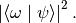
And the state of the system will change to  .
.
The state vector obeys the Schrödinger equation,

where  is the Hamiltonian operator.
is the Hamiltonian operator.
The logic here is that we first find the way to describe a system, then think about how to find out the information we need from the state vector and also find the evolution of the state vector. Then we need the operator and Schrodinger equation. Finally, we would like to relate the theory to experiments, and it comes the measurement postulate.
Later we will need the relation between position and momentum, which becomes the fourth postulate.
How to solve the evolution of a system? We just define a magical operator, propagator
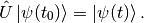
This operator just gives us the evolution of state vector! Wait, can we write down the explicit expression of it?
Let’s find out. The only thing we know about the evolution of a state vector is the third postulate up there.

Looks familiar? This just gives us a exponential result, if the Hamiltonian is time independent.

We can prove that this operator is Unitary because is Hermitian.
This is just the abstract representation, we work in some basis, and the most convenient basis is the eigenstates of Hamiltonian, {  },
},

And we are going to use
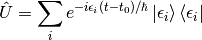
from now on. (Well, only on discrete eigenvalues ones.)
(See that? Identity does the work again.)
Summarize here.
 } basis.
} basis. operator.
operator.Define basis.
Orthonormal:
braket{x}{x’}=delta(x-x’)
Complete:
int braket{x’}{x’} d x’ = mathbb{I}
Define position operator.

And in {} basis, this operator becomes a function, which is

Find state vector in {} basis.


And we are interpreting  as probability density.
as probability density.
Calculate probability of a measurement. Taking as an example.

To find the momentum operator, we need to check the relation between momentum and position before we just randomly define one. Truth is, we have a fourth postulate states the relation between them.
The commutator of , 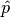 is
![\left[ \hat x, \hat p \right] = i \hbar](../_images/math/cdf7363b3b7e46c391f82de01c1c6961c74ce6c3.png)
 ? Because people define the dimensions of position and momentum differently before they know this commutator. We would like to assign them the same dimension if we already know this relation.
? Because people define the dimensions of position and momentum differently before they know this commutator. We would like to assign them the same dimension if we already know this relation.Find momentum operator in position basis {}.
![\bra{x} \left[ \hat x, \hat p\right] \ket{x'} = i\hbar \delta(x-x')](../_images/math/6be64c508a55a8a70be873bbbdbf0798a89e7f65.png)
And write out the commutator and use the relation of delta function 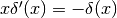, we find out the momentum operator in {} basis,

Let’s talk physics. What does that operator mean? We need to see what the result is when momentum operator is applied to a state. And remember we would work in {} basis.

Integrate by parts, we will find the expression. (I am having a problem finding the right answer.)
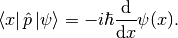
Eigenfunction for momentum.
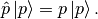
Again, we are going to project it on the {} basis,

where 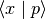 is the eigenstates in {} basis, we call it 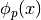.
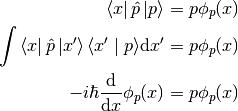
The solution is

This constant C is found by the normalization condition,
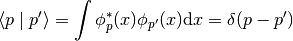
The final results should be

Find the dynamics of free particles in quantum mechanics. Find the propagator and everything solves. The hamiltonian for a free particle is
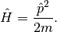
We argue here that the eigenvectors of momentum are also the eigenvectors of this hamiltonian. And we can easily guess the eigenvalues are 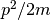. So the propagator is

But that is too abstract to use, we can find the expression in {} basis.

Always start with the propagator for time independent Hamiltonian.

For cases that Hamiltonian with discrete eigenvalues,

If the initial state is just one of the eigenstates of Hamiltonian, say the mth one (normalized),
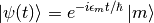
Well, that phase factor doesn’t have any effect for the topic we discuss. So our time evolution will stay on the same state forever.
The same thing happens for continuous cases.
So our task is simplified to solve the eigensystem of Hamiltonian, which is

Potential in a box

Hamiltonian
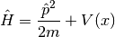
Dynamic equation
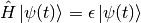
We are happy to work in {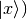} basis,

Put the Hamiltonian in, and remember that in position basis
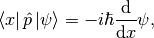
the equation of motion becomes

Boundary conditions

Guess the Solutions

Find the wavenumber k, by putting the assumed solutions into equation of motion

Since we can always merge the negative into the constants, it is fine to use

At x=0,
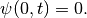
This gives us  .
.
At  ,
,

This leads to

Since  gives us a 0 wave function, we would just drop . For the same reason why we drop the negative values of k, we would drop all the negative values of n.
This BC gives us the possible values of energy because wavenumber k is related to energy,
gives us a 0 wave function, we would just drop . For the same reason why we drop the negative values of k, we would drop all the negative values of n.
This BC gives us the possible values of energy because wavenumber k is related to energy,

with
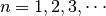
Normalization as the last constraint for the last undetermined parameter,

Estimation
- Find the expression for energy using dimensional analysis.
- Using uncertainty relation to estimate the expression for energy.
Comments
- Why is the solution quantized?
- Too many constraints. BCs + normalization.
- Why do the n in the solution goes into the expression for energy?
- Have a look at the kinetic energy term, the derivative does it.
- What’s so weird?
- For
, no particles found at
. And so on.
Generally, there are two ways of interpreting a transformation.

Here in QM, passive means transform the operator , while active means change the state  . Suppose we have a system , an operator , a transformation .
. Suppose we have a system , an operator , a transformation .
Transformation 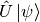 is identical to  because they give the same observation results. The first one is called active, while the second one is called passive.
because they give the same observation results. The first one is called active, while the second one is called passive.
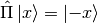
Act on momentum eigenvectors,

Physics: Parity changes the coordinate, so the direction of momentum is also changed.
Math:
Change coordinate from x to -x,
Hermitian,

Unitary
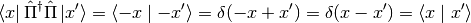
Inverse of parity

Eigensystem of parity.

Apply another operator

So, * Eigenvalues: 1, -1; * Eigenvactors: Even function, Odd function
Parity applied to operators a. Apply to position operator,
Proof:
Apply to momentum operator,
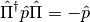
Proof: Similar to the previous one, just change x basis to momentum basis.
Symmetry related to Hamiltonian.
![\left[ \hat \Pi , \hat H \right] = 0](../_images/math/291231eb1a4b728997d9c984aacb5d18e76d63fb.png)
When this happens, parity of Hamiltonian won’t change the wave function. Or the wave function should have an specific parity for 1D problem.
Schrödinger equation and its adjoint
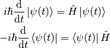
For any observable ,
![\frac{\d }{\d t}\left<\hat \Omega \right > & = \left( \frac{\d}{\d t}\bra{\psi(t)}\right) \hat \Omega \ket{\psi(t)} + \bra{\psi(t)} \dot{\hat \Omega} \ket{\psi(t)} + \bra{\psi(t)} \hat \Omega \left( \frac{\d}{\d t}\ket{\psi(t)}\right) \\
& = \frac{1}{i\hbar} \left ( - \bra{\psi(t)} \hat H \hat\Omega \ket{\psi(t)} +\bra{\psi(t)} \hat\Omega \hat H \ket{\psi(t)} \right) + \bra{\psi(t)} \dot{\hat \Omega} \ket{\psi(t)} \\
& = \frac{1}{i\hbar} \bra{\psi(t)}\left[\hat\Omega,\hat H\right] \ket{\psi(t)}+\bra{\psi(t)} \dot{\hat \Omega} \ket{\psi(t)}](../_images/math/f10bc73fad8e953dcc539e97b948db1c195e5a9a.png)
This is called Ehrenfest’s Theorem.
Suppose we have a system with Hamiltonian

We need to figure some commutators first.
![2m \left[ \hat x, \hat H \right] =\left[\hat x, \hat p^2\right] = \hat x \hat p\hat p - \hat p \hat p \hat x = \hat x \hat p \hat p -\hat p \hat x \hat p + \hat p \hat x \hat p - \hat p \hat p \hat x = \left[\hat x , \hat p\right]\hat p + \hat p \left[ \hat x,\hat p\right] = 2 i \hbar \hat p](../_images/math/e5ec9c44baf3eb30893d78bf4130ffd22a4d541d.png)
![\left[\hat p, \hat H\right] = \left[\hat p, V(\hat x) \right] = \left[\hat p, \sum_0^\infty \frac{V^{(n)}}{n!}\hat x^n\right] =\cdots =-i\hbar V'(\hat x)](../_images/math/2fb6e0b4fcb038f4bc31e3ff81ef99aef63266f8.png)
Position average
![\frac{\d }{\d t} \left< \hat x \right> & = \frac{1}{i\hbar} \bra{\psi(t)} \left[ \hat x, \hat H \right]\ket{\psi(t)} \\
& = \frac{\left< \hat p \right>}{m}](../_images/math/d3445284bd91338668366d8d760c2b8ea3073920.png)
We are familiar with this in classical mechanics.
Momentum average
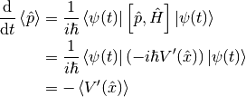
In classical mechanics, the derivative of potential is force. And the result is just like Newton’s 2n Law except the right hand side is not exactly like a force which should be  .
.
 mean¶
mean¶Suppose the potential area is fairly small and distributed around some coordinate  , we can do Taylor expansion around
, we can do Taylor expansion around  .
.

If the uncertainty is small enough, every term except the first one becomes small. So to the lowest order, average of potential is approximately the potential at .
Similarly, the average of first derivative of potential  is approximately
is approximately  .
.
These gives us a hint for the previous result we got for the time evolution of average momentum. The result reduces to classical mechanics one as long as we keep the lowest order of Taylor expansion. Those higher order terms show the quantum effect.
We can see deeper into Ehrenfest’s Theorem through Heisenberg Picture of quantum mechanics.
Pictures are the ways we look at the evolution of systems.
In Schrödinger picture the states are evolving with time.

And for time independent Hamiltonian,

In Heisenberg Picture, the states do not change with time.
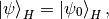
and of course the initial is the same with Schrödinger Picture,

How do we relate to Heisenberg Picture to Schrödinger Picture? Through investigation of observables. We should have the same observation results in both Pictures.

![\frac{\d }{\d t} \hat \Omega _ H = \frac{1}{i\hbar } \left[ \hat \Omega _ H, \hat H \right] + \hat U ^ \dagger \frac{\partial }{\partial t} \Omega _ H \hat U](../_images/math/32fa0838ffa7a9203db5aec9e8c96051f1059625.png)
This can be easily proved by throwing every definition need in to it. We also need the following equations.

And REMEMBER that propagator commute with time independent Hamiltonian, so
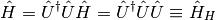
So this Ehrenfest’s Theorem can also be written as
![\frac{\d }{\d t} \hat \Omega _ H = \frac{1}{i\hbar } \left[ \hat \Omega _ H, \hat H _ H \right] + \hat U ^ \dagger \frac{\partial }{\partial t} \Omega _ H \hat U](../_images/math/c7082e804c3657a8e2e9c5043499bc42174c15e0.png)
We can define
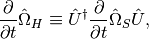
which is the time derivative of operator in Heisenberg Picture.
Reminder: The time derivative of an observable (average) depends not only the time derivative of itself, but also the commutator of the observable and Hamiltonian.
We will show why it is better to work in Heisenberg Picture to show the meanings of Ehrenfest’s Theorem.
Suppose we have a Hamiltonian in Heisenberg Picture,

Time derivative of position operator
![\frac{\d}{\d t} \hat x _ H = \frac{1}{i\hbar} \left[\hat x _ H, \hat H _ H \right ] = \frac{\hat p _ H}{m}](../_images/math/17d1d58471db4eceb38598a934f9a6858c5f75b6.png)
Time derivative of momentum operator
![\frac{\d}{\d t} \hat p_H = \frac{1}{i\hbar } \left[ \hat p _ H, \hat H \right] = - V'(\hat x_H)](../_images/math/244e5da9c133f784d79fc8bd6bb601c1f84eed47.png)
So the operator in Heisenberg Picture just have a sense of the physical quantities in classical mechanics. That’s why we like it.
We say a observable is conserved if the corresponding operator commutes with Hamiltonian,
![\left[ \hat \Omega, \hat H \right]=0](../_images/math/e92ef6d748fd8bc6a60f68fc088f8b4db37ffc50.png)
1. Energy Hamiltonian always commutes with itself.

If Hamiltonian is time independent, then energy is conserved. (If Hamiltonian is tide dependent, energy is not conserved. This is kind of obvious in classical mechanics.)
We can see this by looking at a simple example.
Assume we have a system with energy eigenstates  , and initially,
, and initially,
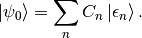
So

We can calculate the expectation value of some operator ,

If are also the eigenvectors of , then

And the expectation value

The important thing is that the time dependence of this expectation value actually arise from this term

As it is so important, we call

Bohr frequency.
Many systems can reduce to it. Use Taylor expansion for the potential and redefine parameters we will find harmonic oscillators in the potential.
Hamiltonian for 1D is
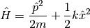
We can use polynomial expansion for part of the solution.
First step is always finding out the characteristic length scale and characteristic energy scale. Assume we have an characteristic length  and characteristic energy scale
and characteristic energy scale  . Through uncertainty principle we know only for dimensional analysis
. Through uncertainty principle we know only for dimensional analysis
![\left[\hat p\right]=\frac{\hbar}{\eta}](../_images/math/6c2ff8af1d198109569ad0cc885b89e1e6767c14.png)
Kinetic energy and potential energy have the same dimension
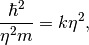
so we have
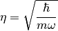
with 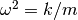. A dimensional analysis shows that  .
.
Now we can define dimensionless variables,

The time independent Schrodinger equation in position basis is
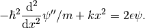
Using those characteristic scales, we can rewrite this equation into a dimensionless one, which is
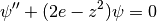
in which  .
.
We need to look at the behavior of the solutions before we can guess a proper general solution.
 , we have
, we have  . Solution to this equation is
. Solution to this equation is  .
.
The solution of the the equation should be in the form

Insert this to time independent Schrodinger equation, we can get the equation of  .
.
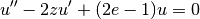
The simplest form of is polynomial,

Put this back to equation of u, we can get the recursion relation,
![(n + 2)(n+1) u _ {n+2} = \left[ 2n - (2e - 1) \right] u _ n .](../_images/math/e9fcd20d874c0d85606b95aa14edfcf7b93ee62f.png)
If  and
and  are given, we can get the whole polynomial.
are given, we can get the whole polynomial.
Notice that we have definite parity here. So  branch vanish because they are even.
branch vanish because they are even.
is set by the normalization condition.
The series blow up if it doesn’t terminate. So we need to terminate the series using the following relation,
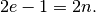
Then we have the energy levels, which is 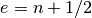.
By picking proper normalization factor, we can write down the energy levels and corresponding wave functions. In fact, this polynomial can be found in mathematical phyisics books.

Find out the characteristic length and energy
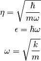
One way to get the intrinsic length without writing down the dimensions of each quantity is to use the following relation
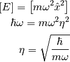
Or if we are given the Hamiltonian in terms of  ,
,
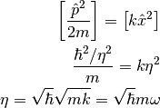
Rewrite the Hamiltonian
![\hat H & = \frac{1}{2m} \left[ \left(\frac{\hat p}{\hbar/\eta}\right)^2 \left(\frac{\hbar}{\eta}\right)^2 + \frac{1}{2} m \omega^2 \left( \frac{\hat x}{\eta} \right)^2 \right] \\
& = \frac 1 2 \hbar \omega \left[ \left(\frac{\hat p}{\hbar/\eta}\right)^2 + \left(\frac{\hat x}{\eta}\right)^2 \right] \\
& = \frac 1 2 \hbar \omega \left( \frac{\hat x}{\eta} - i \frac{\hat p}{\hbar/\eta} \right) \left( \frac{\hat x}{\eta} + i\frac{\hat p}{\hbar/\eta} \right) - \frac{i}{\hbar} \left[\hat x, \hat p\right] \\
& = \frac 1 2 \hbar \omega (\sqrt 2 \hat a^\dagger \sqrt 2 \hat a + 1) \\
& = \hbar \omega \left( \hat a^\dagger \hat a + \frac 1 2\right)](../_images/math/885358e77725183a452042b281d9ca5ec5b77d6e.png)
Now we can define  , which is just like an operator for (energy) quanta numbers.
, which is just like an operator for (energy) quanta numbers.
An impoertan relation is
![\left[\hat a, \hat a^\dagger\right] = 1 \\
\left[\hat a, \hat N\right] = \hat a](../_images/math/bb284c1eeade4db077a3ec9099e4e43ad730db54.png)
The eigen equation for this weird energy quanta number operator is

To find out the eigen state of  and
and  , we try this,
, we try this,
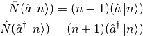
This means  and 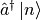 are also eigen states of
and 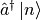 are also eigen states of  .
.
The next step is very crucial. Since and are eigen states of , we know that

Then our next step is to find out what are  and
and  exactly.
exactly.
They way of finding them is to use invariant quantities, such as the inner product. Here we use average of 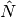 operator.

Final step is to constrain on  , which should be integrals. This is true because we need a cut off for the eigen equation of , whose avarage is n and it should be non negative.
, which should be integrals. This is true because we need a cut off for the eigen equation of , whose avarage is n and it should be non negative.

leads to 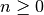. To get this proper cut off, should be integer because if it’s not, according to

n can go to negative numbers. If n is positive integer,
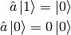
show an cut off at 0.
We can even find out the wave functions of these  by finding the ground state first and apply to the ground state.
by finding the ground state first and apply to the ground state.
Ground state in 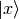 basis can be found by solving the differential equation,

Very important:
- The Hermitian conjugate of
.
- Hermitian conjugate of 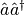 is . This can be a trap. Hermitian conjugate is the complex conjugate AND TRANSPOSE!
In phase space, the trajectory of phase space points ( { and } ) is on a circle of radius .
and } ) is on a circle of radius .
Key points:
 and
and 
Apply Ehrenfest theorem to annihilation operator,
![i\hbar \frac{\mathrm d}{\mathrm d t} \avg{\hat a(t)} = \bra{\psi} \left[ \hat a(t), \hat H \right] \ket{\psi} = \hbar \omega \avg{\hat a(t)}](../_images/math/bec194c0a5fcfe26d0586184d0ca3154a04d8b17.png)
Excellent. Now we can solve out  , which is
, which is

Take the hermitian conjugate,

With these two operators, we can find out the average of and because

we have
We can have a look at these two averages,
It is obvious that the average reduces to classical case if  . But this is too strong for a semiclassical limit.
. But this is too strong for a semiclassical limit.
Coherent state is the eigenstate of creation operator. Its wave package has the smallest spread allowed by quantum mechanics.
The most special part about coherent state is that the system stays on coherent state if it start with coherent state.

Take the hermitian conjugate,

At  , we have
, we have

That is to say, energy should be

Initially, we also have

This means
(This result)
(To Be Finished...)